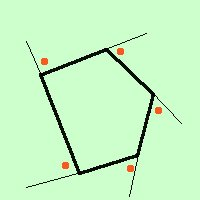
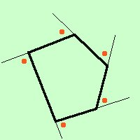

|
 per verso orario si intende il verso che si ottiene muovendoci come le lancette dell'orologio: a destra vedi gli angoli avendo preso il verso orario  Per verso antiorario invece si intende il verso contrario a quello delle lancette dell'orologio: a sinistra gli angoli avendo preso il verso antiorario Da notare che sullo stesso vertice l'angolo preso in senso orario e l'angolo preso in senso antiorario sono tra loro opposti al vertice |